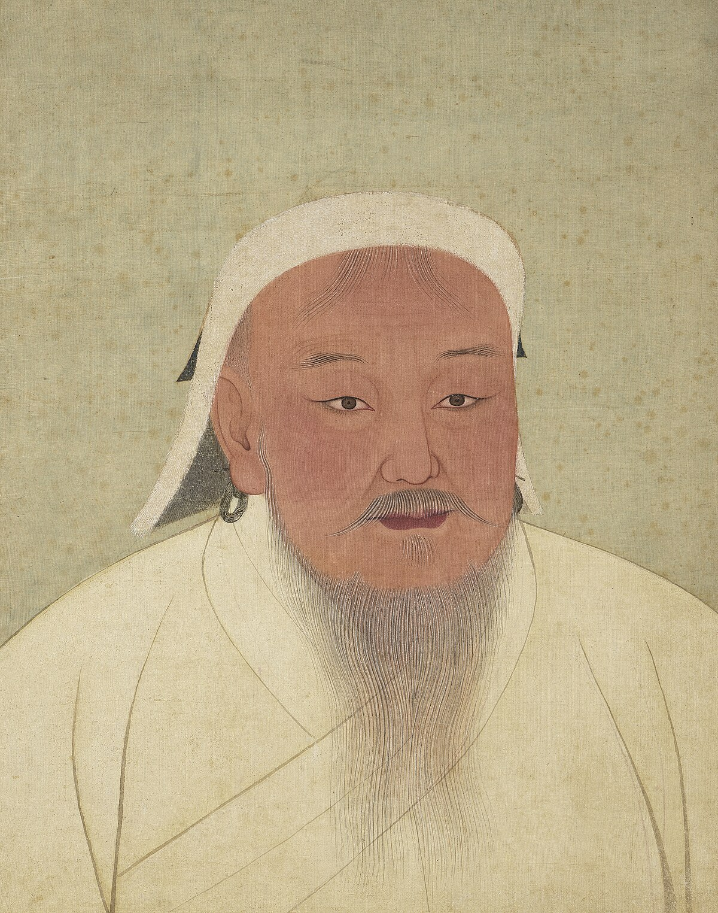

Period: 1206 – 1368 CE
Founder: Genghis Khan
Capital(s): Karakorum; later Khanbaliq (modern Beijing)
Legacy: Military Strategy, Trade Expansion, Cultural Exchange, Political Unification
Introduction
In the early 13th century, the vast Eurasian steppe gave rise to a swift and astonishing transformation. What began as a fractious collection of nomadic clans would, within a single human lifespan, coalesce into the largest contiguous land empire the world has ever seen. Under the leadership of Temujin—who would take the title Genghis Khan—the Mongols changed the course of world history, redrawing borders from the Pacific Ocean to the heart of Europe. Their armies swept through Persia, Russia, China, and Eastern Europe with unparalleled speed and efficiency. Yet alongside the tales of destruction, the Mongols fostered unprecedented cultural exchange, revived and secured trade routes, and introduced new administrative practices that shaped the governance of successor states for centuries.
To understand the full scope of the Mongol Empire is to appreciate the complexity of steppe societies, the ingenuity of their military and administrative systems, and the paradox of deadly violence paired with far‑reaching tolerance. This article will explore the Mongols’ rise under Genghis Khan, their conquests and governance under his successors, the flowering of Silk Road commerce, the empire’s eventual fragmentation, and its enduring global legacy.
Origins: The Rise of Genghis Khan
Temujin was born around 1162 on the boragin bank of the Onon River, son of Yesügei, a minor chieftain of the Borjigin clan, and Hoelun. His early years were marked by hardship: after his father's death, his family was abandoned by their tribe and forced into destitution. From these brutal origins, Temujin developed an unbreakable will. He formed a sworn brotherhood (anda) with his boyhood friend Jamukha, only to see their bond shatter under the weight of divergent ambitions. It was this crucible of betrayal, survival, and alliance‑building that forged the character of the man who would become Genghis Khan.
By 1186, Temujin had begun to consolidate power among the Mongol clans through both diplomacy and force. He adopted a meritocratic ethos—promoting individuals based on ability rather than birth—and codified his authority in a preliminary set of laws that would evolve into the famed Yassa. Between 1186 and 1206, he subdued rival tribes in a series of campaigns, employing both cavalry tactics and the strategic co‑option of enemy leaders. In the kurultai (great assembly) of 1206, tribal chiefs proclaimed Temujin “Genghis Khan,” or “Universal Ruler” of the Mongols, marking the formal birth of the empire.
Genghis Khan’s reforms shattered the traditional clan structure that had kept the Mongols divided. He re‑organized his cavalry into decimal units—arbans (10 men), zuuns (100), mingghans (1,000), and tumens (10,000)—ensuring discipline, communication, and loyalty. He institutionalized harsh—but uniformly applied—penalties for theft, betrayal, and desertion, while rewarding bravery and competence. Under his leadership, the Mongols became not just raiders but a coherent, expanding state with clear objectives, logistics, and a growing bureaucracy.
Military Tactics and Innovations
The success of the Mongol conquests rested on a triad of strengths: masterful cavalry, innovative siegecraft, and sophisticated intelligence networks. Every Mongol soldier was trained from childhood to ride and shoot with deadly accuracy. They carried composite bows capable of piercing armor at hundreds of meters. The decimal organization allowed rapid mobilization and redeployment: commanders at all levels could execute complex maneuvers on the fly.
Genghis Khan and his generals, notably Subutai, deployed feigned retreats to draw enemies into ambushes, used captured troops as human shields, and embraced brutality as psychological warfare. Cities that resisted were often sacked with wholesale slaughter; news of such reprisals spread in advance, compelling many subsequent targets to surrender without a fight. Yet when cities surrendered, the Mongols could be surprisingly lenient—offering protection in exchange for tribute and soldiers.

Siege warfare techniques were rapidly adopted and improved. The Mongols recruited Chinese engineers to design powerful trebuchets and siege towers, enabling them to reduce walled cities like Xiangyang after years-long campaigns. In Persia and the Middle East, they employed Islamic craftsmen and expertise to breach fortifications. They also pioneered mobile forges and field workshops, ensuring their armies carried the means to fabricate or repair weapons on the march.
Government and Administration
Far from being mere mobile pillagers, the Mongols developed a comprehensive administrative apparatus. Genghis Khan’s Yassa legal code—never formally written down but enforced by decree—demanded loyalty, fraternity, and strict discipline. It outlawed theft of livestock (a capital offense), mandated the sharing of spoils, and granted freedom of religion. After each campaign, census‑takers recorded populations and taxable wealth; messengers maintained lines of communication across the vast empire.
The empire was divided into provinces under trusted lieutenants who mixed Mongol oversight with existing local administrations. In China, for example, the Yuan dynasty retained many Song institutions but placed Mongol nobles at the apex. In Persia and Iraq, the Ilkhans adopted aspects of Islamic governance, working with Muslim scholars to collect taxes and administer justice. A network of relay stations known as the “Yam” provided fresh horses and accommodations for couriers, enabling messages to travel up to 200–300 km per day.
Women of the Borjigin clan and other noble lineages often wielded significant influence. Genghis Khan’s daughters and granddaughters were entrusted with the governance of key regions, acting as regents and military leaders. Their courts welcomed envoys from Europe, the Islamic world, and Tibet, serving as hubs of political negotiation and cultural exchange.
Engineering, Communication, and Infrastructure
Although the Mongols are best known as riders of the steppe, they understood the value of roads, bridges, and safe trade corridors. They repaired and expanded existing Silk Road arteries, built caravanserais at regular intervals, and guaranteed the security of merchants through imperial decrees. The pax Mongolica—Mongol Peace—ushered in decades of relative stability that contrasted sharply with the fragmented polities of previous centuries.
The Yam postal system featured waystations every 30–40 km, stocked with fresh horses and provisions. Official missives could cross the empire in mere weeks—a feat previously unthinkable. Public works included stone bridges over mountain passes in Central Asia, irrigation canals in the Iranian plateau, and new causeways around the Crimea. In many regions, the Mongols introduced paper currency under Kublai Khan, facilitating long‑distance transactions without the need for bulky coinage.
To oversee these projects, the Khans recruited engineers from China, Persia, and the Islamic world. Artisans skilled in metallurgy, masonry, and hydraulics moved east and west across the empire, carrying knowledge of gunpowder recipes, printing techniques, and advanced irrigation methods. These exchanges accelerated technological diffusion on an unprecedented scale.
Religion and Cultural Exchange
One of the Mongols’ most far‑reaching policies was religious tolerance. Genghis Khan declared that every faith—Buddhism, Islam, Christianity, Daoism, Shamanism—was to be treated equally under the law. He exempted clergy from taxation and allowed missionaries free passage. This pluralism drew scholars, monks, and diplomats from across Eurasia, creating cosmopolitan courts in Karakorum, Samarkand, and Khanbaliq.
Chinese Buddhist monks translated Persian astronomical texts into Chinese; Persian astrologers trained under Chinese jadesmiths to cast horoscopes for Yuan princes. Nestorian Christian churches in Central Asia received imperial patronage, while Tibetan lamas became advisors at the Mongol court. Marco Polo’s famed journey to Kublai Khan’s capital was made possible only by this open environment—a realm where a Venetian merchant could rise to become a provincial governor.
Economic Systems and Trade
Under the Pax Mongolica, trade flourished like never before. Caravan routes linked markets from Chang’an to Cairo. Luxury goods—silk, spices, precious metals—flowed eastward; horses, furs, and gold dust traveled west. Banking practices advanced as merchant houses in Venice and Genoa opened branches in Tabriz and Samarqand. The Yuan Dynasty’s issuance of paper money—initially backed by silk and later by government decree—introduced one of the first large‑scale fiat currencies.
Trading communities grew into thriving cities. Samarkand became a melting pot of Persians, Turks, Italians, and Chinese, filled with mosques, madrasas, and bazaars. In Baghdad, Jewish scholars translated Greek philosophical works into Arabic once again, while Cairo’s markets brimmed with paper money and Mongol‑minted coins. The movement of ideas accompanied goods: medical treatises from Baghdad informed Chinese physicians; printing techniques from China spread Westward.
Science and Technology
The empire served as a corridor for scientific exchange. The Maragheh Observatory, established by the Ilkhan Hülegü and directed by Nasir al‑Din al‑Tusi, introduced advanced astronomical instruments and compiled star maps that would influence Islamic and European astronomy alike. In Khanbaliq, scholars experimented with hydraulic engineering and refined clockwork devices brought by Arabic engineers.
Medical knowledge traveled just as freely. Persian physicians in Mongol courts compiled encyclopedias merging Galenic and Chinese herbal traditions. Cities along the Silk Road became centers for inoculation practices—smallpox inoculation techniques passed from China toward the Middle East and eventually Europe.
Challenges and Fragmentation
After Genghis Khan’s death in 1227, his empire passed to his sons and grandsons. While Ogedei Khan continued expansion, by the late 13th century rivalries emerged. The empire split into four khanates: the Golden Horde in Russia, the Chagatai Khanate in Central Asia, the Ilkhanate in Persia, and the Yuan Dynasty in China.
Each khanate adopted different religions—Islam in the west, Buddhism and Confucianism in the east—and developed its own administrative systems. Succession disputes, coupled with the economic strain of constant war and the devastation of the Black Death (which struck Central Asia and Europe in the mid‑14th century), weakened Mongol cohesion. By 1368, the Ming uprising in China expelled the Yuan, effectively ending Mongol rule in East Asia.
Legacy in Specific Regions
Mongolia
In the steppes, Genghis Khan became a national founder. His image adorns banknotes and statues across modern Mongolia. Festivals like Naadam celebrate the “Three Manly Games” of wrestling, horseback riding, and archery—traditions dating to the empire’s earliest days.
China (Yuan Dynasty)
The Yuan introduced land surveys, a unified postal system, and paper currency—practices adopted by the subsequent Ming Dynasty. They also opened China more fully to foreign trade and ideas, leaving a legacy of cosmopolitan culture in Beijing and beyond.
Russia (Golden Horde)
Russian principalities paid tribute to the khans but retained local princes. This “Tatar Yoke” shaped Russian attitudes toward centralized authority and influenced Moscow’s rise, as princes who collected tribute for the Horde gained prestige.
Central Asia (Chagatai Khanate and Timur)
The Chagatai realm became a crossroads of Turkic and Persian culture. In the 14th century, Timur (Tamerlane) rose in Samarkand, claiming descent from Genghis’s family, and built an empire echoing Mongol political forms.
Europe
Europe’s brief encounters with Mongol armies prompted military reforms: heavier armor, new cavalry tactics, and the fortification of key cities. Diplomatic missions—such as those by Giovanni da Pian del Carpine and William of Rubruck—brought back vital intelligence about the wider world.
Myths vs. Reality
Popular culture often depicts the Mongols as mindless barbarians. In reality, while their campaigns could be brutally efficient, they also cultivated arts, letters, and agriculture. Recent scholarship has reassessed the extent of destruction, arguing that many cities recovered within decades and that the empire’s administrative integration laid foundations for later states.
Likewise, the narrative of total annihilation overlooks instances of negotiated surrender, religious patronage, and cultural patronage. When Mongol governors found submission more profitable than slaughter, cities flourished under their rule—often more so than before.
Conclusion
The Mongol Empire’s brief but explosive lifespan reshaped Eurasia in ways still felt today. It united disparate cultures under a single political framework, revived trade spanning thousands of miles, and accelerated the transfer of technology, religion, and ideas. Though the empire itself fragmented by the late 14th century, its legacy endured—in the national identity of Mongolia, the administrative reforms of successor states, and the very concept of a world interconnected by commerce and communication.
In an age often fractured by localism and conflict, the story of the Mongols reminds us of the power—and the peril—of sweeping integration. Their achievements in governance, tolerance, and innovation stand alongside the devastation they wrought. To study the Mongol Empire is to confront that duality: a civilization of extraordinary ambition, whose hoofbeats still echo across the continents.